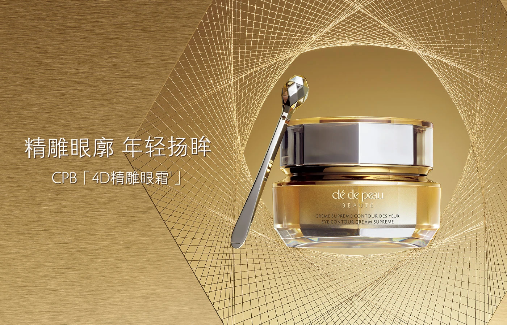
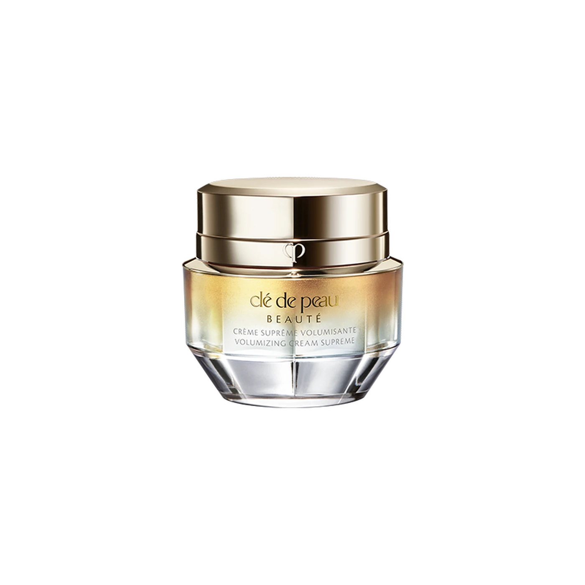
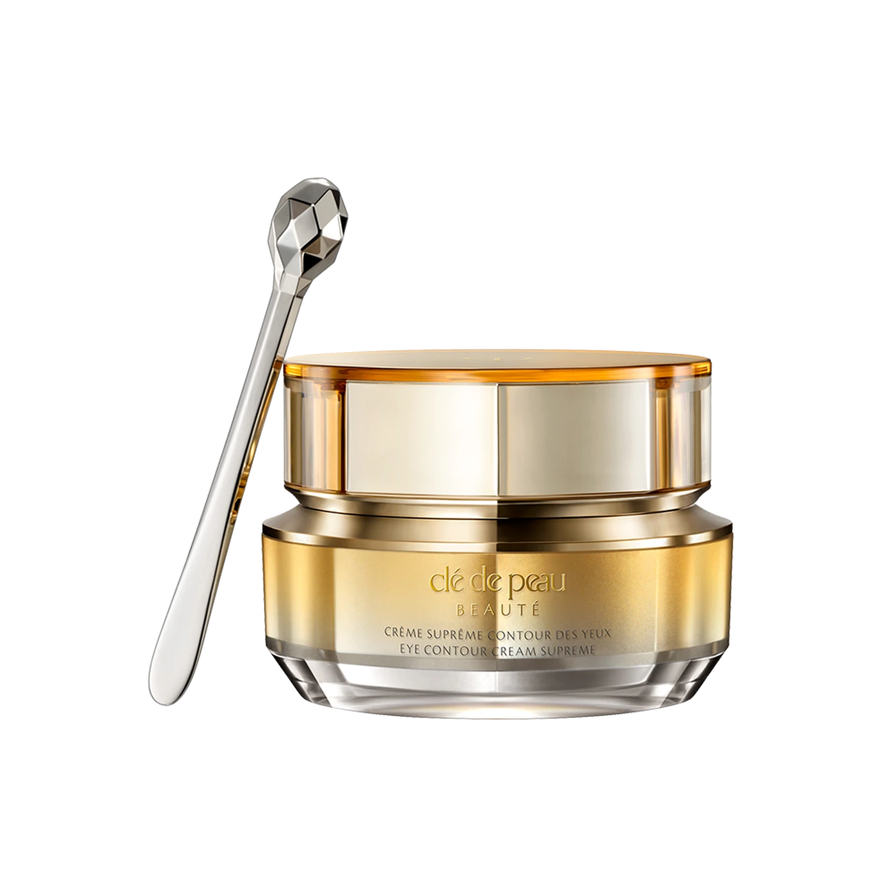
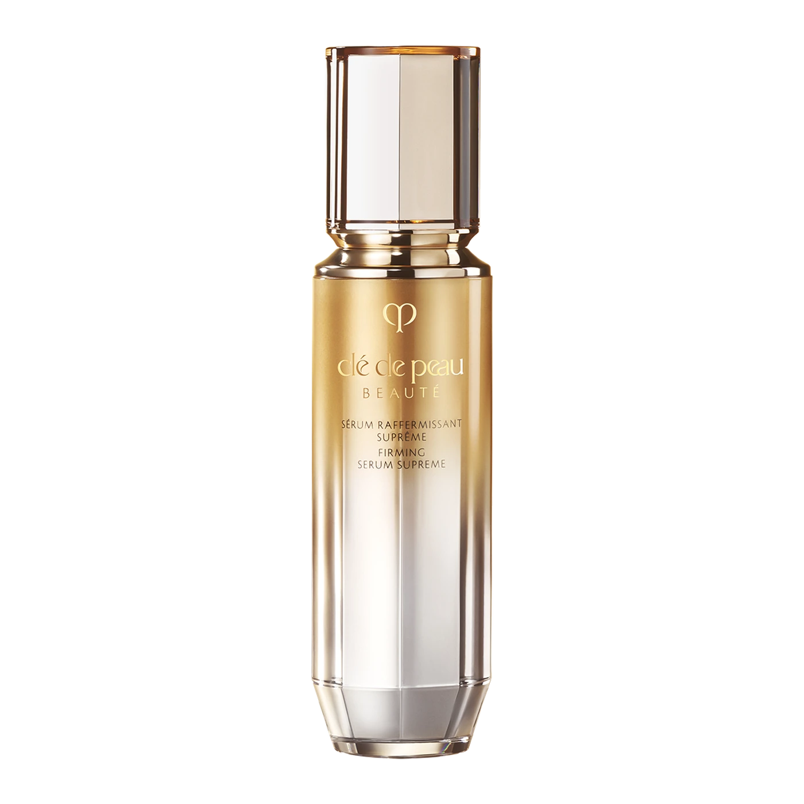
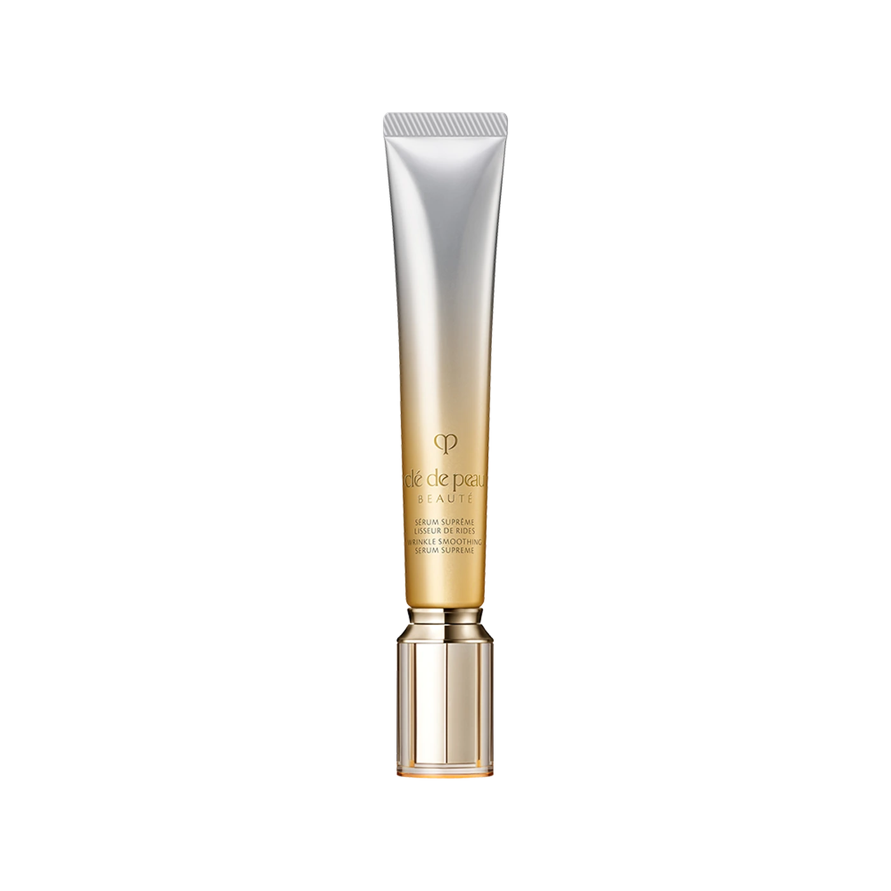

03内容路径
先让人看懂“结构抗老”，
再谈产品组合。
从感知问题到理解方法，再到产品选择，给内容安排清晰的阅读顺序。
01 / NOTICE
看见问题
用日常状态引发对面部变化的关注。
02 / UNDERSTAND
理解方法
解释护理区域与产品之间的关系。
03 / CHOOSE
组成方案
将单品功能连接为组合思路。
04 / EXPERIENCE
完成体验
通过体验与咨询继续建立认知。
CLÉ DE PEAU BEAUTÉ
向上，
是时间的新方向。

The project.
从消费者对“整张脸状态”的抗老判断出发，用一个核心传播主题串联四款产品，再把线上内容、产品组合与线下体验连接为一条完整的沟通路径。
消费者的抗老判断同时包含眼周、面中与轮廓。内容从可感知的面部状态切入，帮助用户建立产品组合的理解。
以不同面部区域的护理需求组织系列产品，让每款产品在整体沟通中有清楚的位置。




从感知问题到理解方法，再到产品选择，给内容安排清晰的阅读顺序。
用日常状态引发对面部变化的关注。
解释护理区域与产品之间的关系。
将单品功能连接为组合思路。
通过体验与咨询继续建立认知。
把体验流程、产品试用和建议输出安排在同一个活动路径里。
从确认核心表达、制作内容到预热与引爆，让每一步都有可执行的任务。
统一传播主题、产品信息与视觉方向。
完成可持续复用的内容与体验物料。
通过线上内容积累产品认知。
将内容热度导向线下体验与后续沟通。
保留原有方案的全部页面。点击图片可放大查看细节。